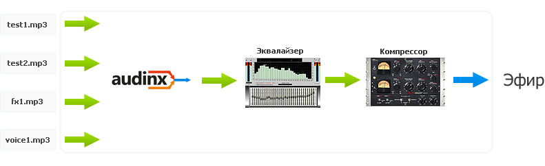

Если коротко, то audinx — это server-side realtime MP3 mixer.
Предназначен для организации и программирования эфира
Управляется посредством telnet или HTTP с помощью SQL-подобных команд.
Позволяет создавать любое число источников из локальных либо удаленных MP3-файлов или MP3-стримов,
манипулировать ими, пропускать их через DSP-штуки и транслировать получившееся на произвольное количество
Icecast2-серверов и писать в файл, на память.

Для генерации потоков радио на PromoDJ в самом начале мы использовали ices0 с Perl-обработчиком для вещания
по каким-то нашим динамическим плейлистам. Всё бы ничего, но ices0 отличается усиленной падучестью, особенно если включить
dumb crossfade mode, и абсолютно нефункциональным управлением, которое годится только для простой интернет-радиостанции.
Душераздирающим фактом для нас также являлась невозможность включить парочку MP3 одновременно, плавно изменяя громкость у одной
из них, или же подключить живого человека, не разрывая эфир.
В какой-то момент мы приняли решение написать свою тулзу как замену ices0, с нашим покером и поэтэссами, заточенную
строго под наши нужды, но в то же время — вполне себе универсальную. Именно так, ровно за 7 суток, появился
audinx.
audinx [-h 192.168.0.1] [-p 8127] [-d] [--pid audinx.pid] [-l log] [-P audinx] [-a 192.168.0.2] [-e command]
[-f prefetchfolder/] [--debug] [--dump-status] [--dump-idle] [--check-libs]
| -h ip -p port | — | на каком ip:port принимать входящие управляющие подключения; |
|---|---|---|
| -d | — | демонизироваться при запуске; |
| --pid audinx.pid | — | pidfile; |
| -l fname | — | куда писать лог; |
| -P prefix | — | какой использовать префикс в логе (полезно при логгировании работы нескольких audinx'ов в один файл); |
| -a ip | — | указывает IP, с которого к нам может прийти управляющее подключение; может быть указано несколько таких ключей; |
| -e command | — | сразу после запуска выполнить команду command; может быть указано несколько таких ключей, начиная с 0.2 выполнение будет происходить фоном (как при EXECUTE BACK), так что теперь законнектиться и порулить всем вы сможете сразу после старта audinx'а; |
| -f prefetchfolder/ | — | начиная с 0.2 указывает, где хранить prefetched remote sources; |
| --debug | — | начиная с 0.2, включает много тупой отладочной фигни; |
| --dump-status | — | начиная с 0.2, включает запись в лог результата команды STATUS каждые 5 секунд; |
| --dump-idle | — | начиная с 0.2, включает запись в лог времени ожидания микшера каждую секунду; |
| --check-libs | — | начиная с 0.2, проверяет, всё ли хорошо с liblame/libmad, если всё ок — то пишет AUDINX READY и выходит с rc=0; |
Внутри audinx управляется текстовыми командами, с помощью которых вы создаете источники, манипулируете ими,
назначаете события, делаете что-то ещё.
Команды можно будет сказать после соединения с audinx'ом, при старте, а также в тот момент, когда
audinx постучится к вам на http (см. команду EXECUTE).
|
CREATE SOURCE "ID" LOCAL "fname" SCAN; CREATE SOURCE "ID" LOCAL "fname" NOSCAN; CREATE SOURCE "ID" LOCAL "fname" SETUP DURATION "d.d"; |
CREATE SOURCE "ID" LOCAL создает источник с идентификатором ID из локального MP3-файла. Необходимо отметить, что два источника с одним ID существовать не могут (при попытке создания audinx вернет ошибку). Для того, чтобы точно узнать продолжительность (DURATION) источника (она пригодится при создании событий, привязанных ко времени, исчисляемому от конца источника), audinx'у необходимо просканировать источник, т.е. полностью зачитать его, сконвертить в PCM и посчитать количество сэмплов, то есть проиграть его виртуальным образом ;) К сожалению, других, более вменяемых путей для вычисления продолжительности MP3 не существует, т.к. в файле могут попадаться битые и более другие фреймы с разным битрейтом. Именно поэтому в первый раз источник должен создаваться в режиме SCAN: в ответ audinx вернет продолжительность источника — её можно будет запомнить и в следующий раз избежать сканирования, указав SETUP DURATION "...". Если события, привязанные к «X секунд до конца трека» не нужны, то можно не заморачиваться и использовать NOSCAN. Сразу после того, как CREATE SOURCE ответит код 200, что означает, что всё хорошо, источник готов к использованию: он находится в состоянии stop, будет играть с самого начала, громкость равна 100 (максимум). В случае, если файл будет вдруг признан несуществующим, CREATE SOURCE вернет 404. |
|---|---|
|
CREATE SOURCE "ID" REMOTE "http://domain.tld/somefile.mp3" SCAN; CREATE SOURCE "ID" REMOTE "http://domain.tld/somefile.mp3" NOSCAN; CREATE SOURCE "ID" REMOTE "http://domain.tld/somefile.mp3" SETUP DURATION "d.d"; |
CREATE SOURCE "ID" REMOTE практически повторяет CREATE SOURCE LOCAL, но работает с источниками, которые лежат
на каких-нибудь других серверах, но доступны по HTTP; кроме этого, что вполне естественно, имеет несколько
своих особенностей. Начиная с 0.2, при выполнении CREATE SOURCE "ID" REMOTE будут произведены реквесты к урлу, по которому лежит файл. Если там будет что-то неочевидное (не 200, какие-нибудь редиректы, что-то ещё), то источник не будет создан. Если HTTP-сервер на той стороне отдаст Content-Length, то источник будет считаться seekable: соответственно, его можно будет «перемотать» на нужное смещение в секундах. Нужно понимать, что seek для REMOTE-источника (как и для LOCAL-источника) — это _всегда_ рестарт с нулевого смещения. Это означает, что если вы хотите перемотать на первую минуту второго часа какого-нибудь микса, то придется подождать, поэтому любые seek'и следует делать заранее. Кроме этого, в случае, если во время использования источника отдающий сервер, например, отвалится, то произойдет реконнект и в случае с seekable-источником, будет произведен seek на последнюю известную позицию. Если та сторона серьезно умерла и первый реконнект не помог, он будет продолжаться бесконечно, при этом источник будет находится в состоянии stop всё это время. Если та сторона для не-seekable источника отвалится — после реконнекта продолжим играть источник как ни в чем не бывало. |
| CREATE SOURCE "ID" BIND HOST "192.168.0.1" PORT "8128" PASSWORD "ambatiello"; |
CREATE SOURCE "ID" BIND позволяет организовывать «прямые включения» (с полей, например ;). Работает следующим образом: при создании биндится на указанный интерфейс и порт, прикидывается Icecast2-сервером и ждет подключения. При авторизации audinx проигнорирует значение mountpoint, пароля будет вполне вполне достаточно. Как только пользователь подключится, источник переходит из состояния stop в состояние play. При дисконнекте, соответственно, всё происходит наоборот. Таким образом, можно заранее создать парочку bind-источников и в нужный момент подсоединиться и подмикшироваться в эфир радиостанции. |
|
CREATE SOURCE "ID" PREFETCH REMOTE "http://domain.tld/somefile.mp3" TO "somefile.mp3" SCAN; CREATE SOURCE "ID" PREFETCH REMOTE "http://domain.tld/somefile.mp3" TO "somefile.mp3" SETUP DURATION "d.d"; |
PREFETCH REMOTE — это спасение. Почему? Да потому, что если файлы у вас лежат в Москве, а audinx запущен на
сервере в Питере, то это _совершенно_ не означает, что они всегда будут доступны из Питера:)
Поэтому и PREFETCH. По сути, это некий волшебный CREATE SOURCE LOCAL + CREATE SOURCE REMOTE в одном флаконе. Если локальный (относительно ключа -f) файл не будет найден, то он будет профетчен из интернетов и записан на местный диск. После этого работа с источником будет проходить совершенно также, как она проходила бы с источником, созданным с помощью CREATE SOURCE LOCAL. В случае, если записать файл на местный диск не получится, то источник будет выглядеть так, как будто был создан с помощью CREATE SOURCE REMOTE. В случае агрессивного использования PREFETCH REMOTE, не забывайте использовать MAINTENANCE PREFETCH "X" (очищает prefetch-папку от всех файлов, которые старше X секунд). Специально для PREFETCH REMOTE был реализован модицификатор SHOT — CREATE SHOT SOURCE "ID" PREFETCH REMOTE ... — он убивает созданный источник (DROP SOURCE) сразу после того, как тот будет создан. Кроме этого, после SCAN/NOSCAN/SETUP DURATION "d.d" можно задать ON DROP "cmd" (cmd выполнится, когда источник будет уничтожаться), ON DONE "cmd" (cmd выполнится, когда источник доиграет до конца), ON FUCKUP "cmd" (cmd выполнится, если случится некая фатальная ошибка работы с remote-источником). |
| DROP SOURCE "ID" | Немедленно уничтожает источник. |
| DROP SOURCES LIKE "prefix" | Немедленно уничтожает все источники, имена которых начинаются на указанный префикс. |
| PLAY SOURCE "ID" | Начинает играть источник. |
| PAUSE SOURCE "ID" | Ставит источник на паузу. |
| STOP SOURCE "ID" | Останавливает источник и перематывает на начало (фактически это PAUSE + SEEK TO 0). |
| SEEK SOURCE "ID" TO "s.s" | Перематывает источник (если это возможно) на указанную в секундах позицию. Может быть указана отрицательная позиция, в этом случае audinx перемотает источник, исчисляя время от конца. |
| CREATE TARGET "ID" ENCODER "MP3" BITRATE "256" QUALITY "2" TRANSPORT "ICECAST" HOST "icecastserver.tld" PORT "8000" MOUNTPOINT "/broadcast" TITLE "My Station" PASSWORD "yess" URL "http://stationurl.tld" GENRE "chanson" BITRATE "256" PUBLIC "1" DESCRIPTION "true chanson"; |
Создает «получатель» — Icecast2-сервер. Перед отправкой звук будет закодирован в MP3
с указанным битрейтом. «Получатель» будет создан в любом случае. Сразу же после создания будет предпринята попытка соединиться с Icecast2-сервером, чтобы начать вливать закодированный поток, но если ничего не получится — повторная попытка будет предпринята через 15 секунд. Как и в случае с источниками, audinx не даст вам создать два получателя с одним и тем же ID. |
|---|---|
| CREATE TARGET "ID" ENCODER "MP3" BITRATE "256" QUALITY "2" TRANSPORT "FILE" FILENAME "./yess.mp3" |
«Получатель», созданный таким образом, ничего никуда посылать не будет, а просто будет записывать весь эфир
в указанный файл. Если файл существовал на момент создания — то audinx будет дописывать в конец. «Получатель» будет создан в любом случае. В случае каких-либо проблем попытка открытия файла на запись будет производиться каждые 15 секунд. |
| DROP TARGET "ID" | Немедленно уничтожает «получатель». |
| CREATE FILTER "ID" TYPE "EQUALIZER" DEFAULT ENABLED "1" BANDS "8" VALUES "-2,-2,-1,0,1,1,-2,-4" |
Создает фильтр-эквалайзер с указанным ID. Двух фильтров с одним и тем же ID быть не может. ENABLED — 1 если включен, 0 если выключен по умолчанию. BANDS — количество полос (4, 8, 16, 32). VALUES — значения эквализации полос по умолчанию, через запятую. Диапазон — от -127 (-20dB) до 127 (20dB). Положительные значения усиливают полосу частот, отрицательные — уменьшают. |
|---|---|
| CREATE FILTER "ID" TYPE "COMPRESSOR" DEFAULT ENABLED "1" THRESHOLD "-10.0" ATTACK "0.05" DECAY "1.0" RATIO "10.0" GAIN "1.0" |
Создает фильтр-компрессор с указанным ID. ATTACK и DECAY задаются в миллисекундах, THRESHOLD и GAIN — в децибеллах. |
| CREATE FILTER "ID" TYPE "ENHANCER" DEFAULT ENABLED "1" FREQUENCY "16000" VOLUME "1000" |
Создает фильтр-энхенсер. FREQUENCY задает частоту, начиная с которой энхенсер будет энхенсерить ;) VOLUME задает громкость энхенсера. Диапазон — от 0 до 10000, но чего-нибудь меньше 500 вполне хватит. |
| CREATE FILTER "ID" TYPE "TRUEBASS" DEFAULT ENABLED "1" FREQUENCY "150" VOLUME "125" |
Создает фильтр-басёр (басист? :) с указанным ID. Работает как энхенсер, только для низких частот. |
| CREATE FILTER "ID" TYPE "SOUND3D" DEFAULT ENABLED "1" VOLUME "1000" |
Создает фильтр-добавлятель-3D с указанным ID. VOLUME 0 — на выходе моно; 1000 — на выходе то, что пришло на вход; по мере увеличения от 1000 до 10000 звук становится всё тридесятее и тридесятее. |
| CREATE FILTER "ID" TYPE "LOWPASS" DEFAULT ENABLED "1" CUTOFF "10000" | На выходе останется всё, что ниже частоты CUTOFF. Этой штукой удобно отрезать верх на бесплатных каналах :) |
| CREATE FILTER "ID" TYPE "HIGHPASS" DEFAULT ENABLED "1" CUTOFF "150" | На выходе останется всё, что выше частоты CUTOFF. Этой штукой также удобно отрезать низ на бесплатных каналах :))) |
| CREATE FILTER "ID" TYPE "PHASER" DEFAULT ENABLED "1" DRYWET "128" FEEDBACK "40" STAGES "24" DEPTH "128" STARTPHASE "34" FREQUENCY "1.0" |
DRYWET — 0 (dry) ... 128 (dry/wet) ... 255 (wet). FEEDBACK — -100 (-100%) ... 0 ... 100% (100%). STAGES — 2 ... 24. |
| CREATE FILTER "ID" TYPE "FLANGER" DEFAULT ENABLED "1" LEFT FREQUENCY "0.125" DELAY "0.005" PHASEINVERT "1" RIGHT FREQUENCY "0.125" DELAY "0.005" PHASEINVERT "1" | Флэнжер, настройки задаются для левого и правого канала. |
| CREATE FILTER "ID" TYPE "DYNAMP" DEFAULT ENABLED "1" ATTACK "1000" RELEASE "3000" AMPLIFY "10000" | Динамический усилитель, что-то вроде autogain. ATTACK и RELEASE задаются в миллисекундах, AMPLIFY: 0..10000..20000 — 0%..100%..200% |
| DROP FILTER "ID" | Немедленно уничтожает фильтр с указанным ID. |
| ATTACH FILTER "ID" TO SOURCE "SRCID" | ATTACH FILTER "ID" TO SOURCE добавляет фильтр в конец цепочки фильтров источника. Один и тот же фильтр не может находится в цепочке фильтров источника дважды. |
| DEATTACH FILTER "ID" FROM SOURCE "SRCID" | DEATTACH FILTER "ID" FROM SOURCE, соответственно, удаляет фильтр из цепочки фильтров источника. |
| ATTACH FILTER "ID" TO MASTER | ATTACH FILTER "ID" TO MASTER добавляет фильтр в конец цепочки MASTER-фильтров, через которую прогоняется уже смикшированных из всех источников звук, перед отправкой на TARGET'ы. |
| DEATTACH FILTER "ID" FROM MASTER | DEATTACH FILTER "ID" FROM MASTER, соответственно, удаляет фильтр из цепочки MASTER-фильтров. |
Все изменения выполняются с помощью команды SET. Общий её синтаксис выглядит следующим образом:
SET PARAMETER OF ... [DELAY "D"] [FROM "A"] TO "B" [DURING "T"] [GROUP "groupname"]
Необязательный параметр DELAY указывает задержку в секундах перед тем, как изменения начнут выполняться.
FROM указывает начальное значение параметра. Если FROM не будет указан, то в качестве начального значения
будет взято текущее значение параметра на тот момент, когда SET начнет фактически выполняться (т.е. после DELAY).
TO указывает конечное значение параметра.
DURING указывает время в секундах, в течении которого должно происходить изменение. Если не указано —
конечное значение (TO) вступает в силу немедленно.
GROUP задает некое имя группы, которое может быть использовано позже для массового удаления SET'ов с помощью
DROP SETS GROUP "groupname".
Все DELAY'и и DURING'и программируются относительно текущего времени. Именно поэтому в особо сложных случаях, когда
одновременно программируется несколько десятков SET'ов на изменение, например, громкости источника, возможен
вариант, когда SET'ы сместятся из-за времени, потраченного на парсинг или задержки TCP/IP. Для предупреждения таких
случаев используется связка SET FREEZE; SET FROZEN PANNING OF ...; SET FROZEN VOLUME OF ...; — SET FREEZE запомнит текущее время,
и все последующие SET FROZEN будут программироваться относительно запомненного времени, а не текущего.
| SET VOLUME OF SOURCE "ID" TO "100" | Устанавливает громкость источника, от 0 (тишина) до 100 (100% громкости источника). Можно усилить громкость источника, установив громкость 150, например. |
|---|---|
| SET PANNING OF SOURCE "ID" TO "-100" | Устанавливает баланс источника, от -100 (играет только левый канал) до 100 (играет только правый канал). |
| SET ENABLED OF FILTER "ID" TO "1" | Фильтр можно временно отключить от обработки звука, установив ENABLED в 0. Любое значение больше 0 включит фильтр снова. |
|---|---|
| SET BAND0 OF FILTER "ID" TO "0" | Устанавливает значение эквализации полосы (BAND0..BAND31), от -127 (-20 dB) до 127 (20 dB). |
| SET ENABLED OF FILTER "ID" TO "1" | Фильтр можно временно отключить от обработки звука, установив ENABLED в 0. Любое значение больше 0 включит фильтр снова. |
|---|---|
|
SET THRESHOLD OF FILTER "ID" TO "-10.0" SET ATTACK OF FILTER "ID" TO "0.5" SET DECAY OF FILTER "ID" TO "1.0" SET RATIO OF FILTER "ID" TO "4" SET GAIN OF FILTER "ID" TO "2.0" |
Устанавливают соответствующие параметры фильтра. |
| SET ENABLED OF FILTER "ID" TO "1" | Фильтр можно временно отключить от обработки звука, установив ENABLED в 0. Любое значение больше 0 включит фильтр снова. |
|---|---|
| SET FREQUENCY OF FILTER "ID" TO "16000" | Задает частоту, начиная с которой энхенсер будет действовать. |
| SET VOLUME OF FILTER "ID" TO "300" | Задает громкость энхенсера. |
| SET ENABLED OF FILTER "ID" TO "1" | Фильтр можно временно отключить от обработки звука, установив ENABLED в 0. Любое значение больше 0 включит фильтр снова. |
|---|---|
| SET FREQUENCY OF FILTER "ID" TO "150" | Задает частоту, до которой басист будет действовать. |
| SET VOLUME OF FILTER "ID" TO "300" | Задает громкость басиста. |
| SET ENABLED OF FILTER "ID" TO "1" | Фильтр можно временно отключить от обработки звука, установив ENABLED в 0. Любое значение больше 0 включит фильтр снова. |
|---|---|
| SET VOLUME OF FILTER "ID" TO "1000" | 0 — на выходе моно; 1000 — на выходе то, что пришло на вход; по мере увеличения от 1000 до 10000 звук становится более тридесятым. |
| SET ENABLED OF FILTER "ID" TO "1" | Фильтр можно временно отключить от обработки звука, установив ENABLED в 0. Любое значение больше 0 включит фильтр снова. |
|---|---|
| SET CUTOFF OF FILTER "ID" TO "10000" | Выше этой частоты всё будет отрезано. |
| SET ENABLED OF FILTER "ID" TO "1" | Фильтр можно временно отключить от обработки звука, установив ENABLED в 0. Любое значение больше 0 включит фильтр снова. |
|---|---|
| SET CUTOFF OF FILTER "ID" TO "150" | Ниже этой частоты всё будет отрезано. |
| SET ENABLED OF FILTER "ID" TO "1" | Фильтр можно временно отключить от обработки звука, установив ENABLED в 0. Любое значение больше 0 включит фильтр снова. |
|---|---|
|
SET DRYWET OF FILTER "ID" TO "128" SET FEEDBACK OF FILTER "ID" TO "40" SET STAGES OF FILTER "ID" TO "24" SET DEPTH OF FILTER "ID" TO "128" SET STARTPHASE OF FILTER "ID" TO "34" SET FREQUENCY OF FILTER "ID" TO "1.0" |
DRYWET — 0 (dry) ... 128 (dry/wet) ... 255 (wet). FEEDBACK — -100 (-100%) ... 0 ... 100% (100%). STAGES — 2 ... 24. |
| SET ENABLED OF FILTER "ID" TO "1" | Фильтр можно временно отключить от обработки звука, установив ENABLED в 0. Любое значение больше 0 включит фильтр снова. |
|---|---|
|
SET LEFTFREQUENCY OF FILTER "ID" TO "0.125" SET LEFTDELAY OF FILTER "ID" TO "0.005" SET LEFTPHASEINVERT OF FILTER "ID" TO "1" SET RIGHTFREQUENCY OF FILTER "ID" TO "0.125" SET RIGHTDELAY OF FILTER "ID" TO "0.005" SET RIGHTPHASEINVERT OF FILTER "ID" TO "1" |
Частота фленжера, задержка и стоит ли вообще инвертировать фазу (1/0) задаются раздельно для левого и правого канала. |
| SET ENABLED OF FILTER "ID" TO "1" | Фильтр можно временно отключить от обработки звука, установив ENABLED в 0. Любое значение больше 0 включит фильтр снова. |
|---|---|
|
SET ATTACK OF FILTER "ID" TO "1000" SET RELEASE OF FILTER "ID" TO "3000" SET AMPLIFY OF FILTER "ID" TO "10000" |
ATTACK, RELEASE — миллисекунды, AMPLIFY — 10000 = 100% громкости. |
Можно «зашедулить» произвольное число команд, привязав их к какой-то позиции любого источника от его начала
либо до конца.
SCHEDULE SOURCE "ID" AT "secs" [DEBUG] [RESPAWN] [GROUP "groupname"] DO "cmd; cmd; ..."
В случае, если secs — отрицательное число, указанные команды выполнятся за -secs секунд до конца источника
(если его продолжительность известна). Положительное значение secs укажет audinx'у, что команды следует выполнить
на secs-й секунде источника.
Опциональная директива DEBUG укажет, что все выполняемые команды в момент выполнения нужно
будет записать в лог.
После того, как SCHEDULE срабатывает, она перестает существовать. Чтобы создать постоянные SCHEDULE, можно
воспользоваться директивой RESPAWN (восстановление SCHEDULE .. RESPAWN произойдет после того, как источник
доиграет до конца).
GROUP "groupname" позволяет задать некий ID группы группе schedule'ей, чтобы потом уничтожить их с помощью
DROP SCHEDULES OF "ID" GROUP "groupname".
Процесс управления audinx'ом может происходить по двум схемам:
1. скрипт цепляется к audinx'у по TCP и рулит им, как пожелает;
2. audinx сам дергает скрипт через http, как только в этом появляется необходимость.
Если с первым вариантом всё должно быть понятно изначально, то второй придется проиллюстрировать:
С помощью команды EXECUTE вы можете выполнить некоторый набор команд, полученный из локального (для той машины, где
запущен audinx) файла или же по HTTP:
EXECUTE ONCE "/home/yess/wtf.txt";
EXECUTE ANYWAY "http://domain.tld/audinx_commands.txt";
Директивы ONCE и ANYWAY изменяют поведение EXECUTE при ошибке: ONCE попробует открыть локальный файл или сделать запрос
по HTTP только один раз, а в случае с ANYWAY такие попытки будут повторяться бесконечно с интервалом в 1 секунду.
Например, всё может происходить как-то так:
audinx -h ... -p ... -e "EXECUTE ANYWAY 'startup_commands.txt';"
В startup_commands.txt:
CREATE SOURCE "j1" LOCAL "jingle1.mp3" SCAN; CREATE SOURCE "j2" LOCAL "jingle2.mp3" SCAN; CREATE SOURCE "j3" LOCAL "jingle3.mp3" SCAN; ... CREATE FILTER "master-eq" TYPE "EQUALIZER" ...; ATTACH FILTER "master-eq" TO MASTER; ... EXECUTE ANYWAY "http://domain.tld/radio/dispatcher.php?mode=startup";
Соответственно, после запуска и создания некоторого базового окружения audinx дёрнет dispatcher.php?mode=start, который скажет ему, например:
CREATE SOURCE "f1" REMOTE "http://domain.tld/song1.mp3" SCAN; PLAY SOURCE "f1"; SCHEDULE SOURCE "f1" AT "-30" DO "EXECUTE ANYWAY 'http://domain.tld/radio/dispatcher.php?mode=next&id=f2'";
Когда song1.mp3 будет доигрывать, audinx дёрнет dispatcher.php?mode=next&id=f2:
DROP SOURCE "f2"; CREATE SOURCE "f2" REMOTE "http://domain.tld/song2.mp3" SCAN; PLAY SOURCE "f2"; SCHEDULE SOURCE "f2" AT "-30" DO "EXECUTE ANYWAY 'http://domain.tld/radio/dispatcher.php?mode=next&id=f1'";
Для отладки выполняемых через EXECUTE команд можно использовать LOG:
LOG 'Yes! :)';
В любой момент времени audinx ответит на команду STATUS, напечатав, что присходит и как вообще дела, например:
0 Source "f1": status=play, pos=113.63, duration=2973.75, remains=2860.12, volume=100.00, panning=0.00 0 Source "f2": status=stop, pos=0.00, duration=38.14, remains=38.14, volume=100.00, panning=0.00 0 Filter "e": type=enhancer, enabled, used=1, freq=16000, volume=300 0 Master: filters=e 200 Uptime: 217.95, underruns: 0, memory used: 566128
Или так:
0 Source "f1": status=play, pos=260.86, duration=360.86, remains=100.00, volume=100.00, panning=0.00, totalsize=8689116, bytesreaded=6307869 0 Source "f1_jingle_db2a2696e2de28fda4b723a24498704f": status=stop, pos=0.00, duration=6.40, remains=6.40, volume=100.00, panning=0.00, totalsize=257152, bytesreaded=5545 0 Source "f2": status=stop, pos=3.50, duration=323.60, remains=320.10, volume=0.00, panning=0.00, totalsize=7592851, bytesreaded=134448 0 Source "f2_jingle_f403d844ee6a936fc3dc3ef71b83252d": status=stop, pos=0.00, duration=2.77, remains=2.77, volume=100.00, panning=0.00, totalsize=111911, bytesreaded=5545 0 Target "icecast": written=165234843, lastsecwritten=0, failures=0 0 Filter "equalizer": type=equalizer, enabled, used=1, bands=16, values=-5,1,12,10,8,6,4,2,0,-4,-8,-12,-16,-18,-20,-22 0 Filter "compressor": type=compressor, enabled, used=1, threshold=-16.00, attack=0.50, decay=50.00, ratio=2.00, gain=-1.00 0 Filter "enhancer": type=enhancer, enabled, used=1, freq=16500, volume=210 0 Setters: 0 active, 111 total 0 Schedules: 11 active, 220 total 0 Master: filters=equalizer,compressor,enhancer 0 Title: 01-wildchild-renegade_master_(fatboy_slim_old_skool_mix)-uia.mp3 200 Uptime: 10256.05, underruns: 10, memory used: 3119888
После запуска audinx создает нитку микшера, внутри которой осуществляется прием данных из источников, прогон
по фильтрам и отдача обработнного звука «получателям».
Для каждого источника и получателя создается по своей нитке. В основной нитке audinx слушает сокет, на которой биндится
при старте, акцептит управляющие соединения и для каждого из них также создает по нитке.
Начиная с 0.2, микшер не пытается изображать из себя совсем уж реалтайм, т.к. в этом, во-первых, нет смысла,
а во-вторых, это слишком накладно — принцип его работы теперь — «много работать, много спать».
Иными словами, он пытается замикшировать «многозвука» на будущее и после этого уснуть.
«многозвука» — это ~250ms по умолчанию, но легко исправляется командой SETUP BUFFER "d.d" (0.1..10.0).
Всё это позволяет на «тонких моментах» очень аккуратненько микшировать по 0.1с наперед, ожидая, например,
каких-либо незапланированных вмешательств в эфир, а в основное время трека готовить по 10 секунд.
После декодирования источники отдают микшеру звук в стерео, 16 bit, 44100 Hz.
Источники в каком-то другом формате (например, моно, 8 бит или 22050 Hz) не поддерживаются.
Никаких других существенных ограничений на первый взгляд нет, всё ограничено памятью машины, где будет запущен
audinx и тем, справится ли CPU с кодированием MP3, т.к. это самая ресурсоемкая часть.